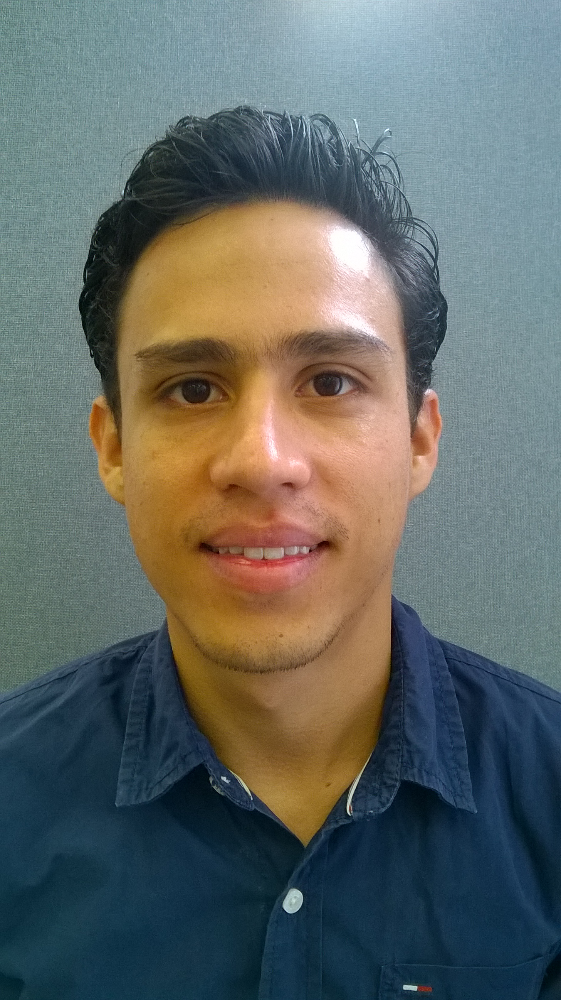
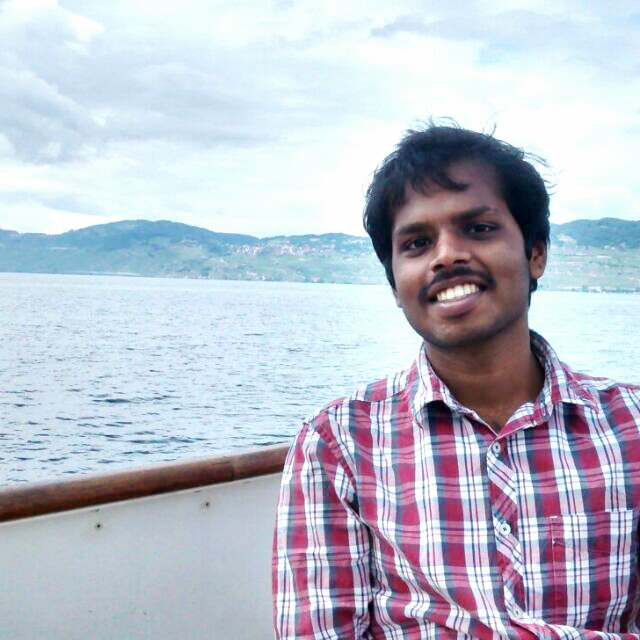

Please describe any relevant past experience
Ex-Board Member of Indian Society for Technical Education(ISTE) Student's Chapter, Nirma University during the academic year 2012-2013.
What are your goals/vision for your committees of choice? How do you think you can contribute to them?
My vision is to enhance the interaction between Alumni and Current Students. I would contribute by coordinating the Alumni-Student Networking events.

Oscar Adrian Jimenez Gordillo
Please describe any relevant past experience
-I was part of the Latin American Optics and Photonics Conference 2014 organizing committee in Cancun, Mexico.
During my undergrad I participated as the:
-Nanotechnology and Science Communication club where we organized talks and workshops. During this time I also hosted a science communication radio show. (three years)
-Make Do-It-Yourself club (one year)
What are your goals/vision for your committees of choice? How do you think you can contribute to them?
As a first year graduate student, I was exposed to a plethora of social activities on campus. The socials were well organized and gave me a chance to interact with students across the SEAS and different schools.
I am a Phd student in the department of Electrical Engineering. Great as many socials were, I hardly saw a social or a happy hour in my department, where students across various years were allowed to interact and participate. Its great to concentrate on conducting socials for new comers (believe me, we needed it and we felt a part of the community), but there was a lack of interaction with our seniors. I would like to conduct more socials back in my department and also in the graduate school where students across various years can participate and discuss their work.
SEAS can organize a social coffee hour for all MS and Phd students once a month or across different schools to come and interact. This helps us not only in interacting on a personal level, but also leads to an exchange of ideas.

Sarat Chandra Vysyaraju
Please describe any relevant past experience
1)Core Team Member of the society ‘Centre for Entrepreneurship’, Indian Institute of Technology (IIT), Bhubaneswar.
-Attended a National Conference on entrepreneurship TIEcon Delhi 2013
2)Co-ordinator, Career Development Cell, IIT Bhubaneswar.
-Played a key role in organizing the campus placement sessions in my senior year.
3)Governor, Souls for Solace, the social welfare group of IIT Bhubaneswar for the academic year of 2013-2014.
- Headed the functioning of the society and arranged campaigns in the field of education and community service.
4)Core-Head, Sponsorship & Marketing Team, Alma Fiesta 2014, Socio-Cultural fest of IIT Bhubaneswar.
- Coordinated with various companies from the industry and maintained their relationsip in regard to the fest.
What are your goals/vision for your committees of choice? How do you think you can contribute to them?
I aspire to improve the scenario of the career development by addressing the practicalities being involved. Its a general trend that EE companies are under represented in job fairs due to the geographical location. However, I believe that we can try to establish an online portal and ask companies to participate in the online sessions and bridge the existent gap.
I have good experience working with various groups during my undergrad and played key role in establishing and nurturing relations with various companies from the industry by aiding the events and stuff.
Please describe any relevant past experience
1. I was a office bearer for the ECE department in my college.
2. I was in the committee of the robotics club.
3. I was a member of the rotaract club.
What are your goals/vision for your committees of choice? How do you think you can contribute to them?
Social interactions help develop interpersonal skills and make one mentally sound and strong. As for our department it is very essential that the students of the department get to network and develop as an over-all personality. It is role of the department committee to ensure such interactions are at a plentiful, so that the students can make the most out of it.
I have studied in various places and met many different kinds of people. This has helped me understand and interact with people very easily.
Please describe any relevant past experience
Editor, Institute of Electrical and Electronics Engineers,
SIES Graduate School of Technology, Navi Mumbai Jan 2012-2014
Compiled the college's technical magazine E-spark for two consecutive years as well as organized several events under IEEE
Coordinator, National Service Scheme,
SIES Graduate School of Technology, Navi Mumbai June 2012-2014
Organized a 7-day residential community service camp, blood donation drives, disaster management workshops and several other workshops that would help bring an awareness in the society
Siemens Ltd.
Intern-Summer Trainee
Nasik,India
June-July 2013
Drafted an article titled ‘Automatic Train Engines’ which deals with the various challenges involved in automating a
Train engine and their possible solutions
Troubleshot various fixtures of railway AC/DC variable-frequency drives used for signaling for offsets, Automatic block signaling(ABS) error,Incorrect breaking distance, generator loss, thermal loss and uninterruptible power
Air India Ltd.
Intern-Electronics Overhaul Division and Accessories Overhaul Division
Mumbai,India
June-July 2014
Charted results of the varying divergence angles, Doppler frequencies ,aperture loss, antenna gain and clutter variations sensed by Palmer and conical scans of phased array radars in ACLS and PALS in Boeing 777-200LR/-300ER, Boeing 747-400 aircrafts
Overhauled tailor-made engineered cabinets like generator unit and variable-frequency drives used in B747-400, B737-800,B777-200LR and 300ER aircrafts
Star Electronics Concepts Pvt Ltd.
Intern-Systems Engineer Trainee
Mumbai,India May 2012- 2013
Interfaced different sensors and display using communication protocols like UART, SPI, and Analog signal processing using ADC
Acquired practical training in Linux and configuration of servers like Apache Web Server, FTP, DBS, SQUID
What are your goals/vision for your committees of choice? How do you think you can contribute to them?
I'm an articulate and highly motivated graduate student accustomed to working under pressure and using own initiative. So,
For the administrative committee:
Continue the good work and find means of utilizing the budget in a more concise manner as well as try to engage more students in EGSC activities! I will also try to add more career related events with help from CCE as well as organize events(maybe online) where alumni or seniors could simply answer the common queries of students
For the Digital Media Committee:
Improve the coverage of events and publicize it via Eventbrite or other social media platforms at least a week in advance so that maximum students are aware about it
For the Social Committee:
While managing the current schedule of events,I could incorporate more events such as inter association/group competitions. For instance, tug-of-war competition between ISAC ,CSC,AAA and other allied groups. That will help break the ice between students.
Please describe any relevant past experience
I was the captain of my department's soccer team in undergraduate.
During my 2 years' serve as the captain, I was mainly responsible for training, evaluating, and organizing matches for the soccer team. I gained some administrative experiences at that time. But more importantly, I learned how every individual's idea values and how to build a big family as the captain.
What are your goals/vision for your committees of choice? How do you think you can contribute to them?
I attended the EGSC board meeting on 25th September. However, I didn't see a lot of Chinese students on the Board. That was a big surprise for me because the Chinese may be the biggest group in SEAS (even more Chinese students than the US students) while the proportion we are in the EGSC is so little. This is an example that Chinese students are not involved well in the whole SEAS community. My vision is to help Chinese students in EE communicate more with the students from other countries and promote the culture interlace between the West and East. I think I can contribute to this goal by serving as the link between Chinese students and other students.
Please describe any relevant past experience
I attended the school's youth volunteers association when I was undergraduate. Youth volunteers association is the bridge between my university and the charity organization in my city.I attended many volunteer activities, such as guiding in the hospital, blood donation.
Besides, in order to share our life with foreign students in out university, I organized the party for foreign exchange students with other students. We invite them into our home, cooking together and talking with others.
What are your goals/vision for your committees of choice? How do you think you can contribute to them?
I want to learn more about the graduates' career development, and help other new comers of columbia, especially who want to find job after graduate, have more idea about their resume and their future career.
I have taken career development course in university. I think I have some basic ideas about the career development, which I think can be shared with other people's in EGSC.
Please describe any relevant past experience
IBM Canada Intern Mentorship Program
- Initiated the matchmaking between intern and full-time mentors to maximize the interns' exposure at IBM.
- Facilitated the feedback process from participants to substantiate the relationship between interns and mentors.
Teaching assistant at Queen's University
- Instructed courses in physics, chemistry, calculus and engineering design methodologies.
- Managed end-to-end design projects of undergraduate engineering students.
- Conducted 1-on-1 tutorial sessions with students that demonstrated great results in the students' understanding of the subject matters.
Queen's University Engineering Orientation Leader
- Welcomed and introduced freshman students to the university through a series of activities designed to develop school spirit and teamwork.
- Liaised between the freshman students and the department to help the students' transition to university.
What are your goals/vision for your committees of choice? How do you think you can contribute to them?
I believe that books and classes can only get a student so far. The network built during his/her experience here will be the most important resource. Nevertheless, alumni relations often feel like a one-way process, in which the alumni are always asked to give, and the students are always the ones to receive. A successful and sustainable relationship in alumni affairs should be bilateral and mutually beneficial. I plan on improving the marketability of the students to the alumni and in return develop a stronger alumni-student relationship.
Any other information you would like to share
As a new student to Columbia I hope to bring fresh ideas to the discussion and become part of the diverse and effective team at EGSC.
Please describe any relevant past experience
None. I've been saving all my energy for EGSC!
What are your goals/vision for your committees of choice? How do you think you can contribute to them?
Alumni affairs: organize outreach events smoothly and helpful for students.
Personally well organized and enjoying planning and organizing events.
Career development: give SEAS students more opportunities to get career advice from CCE, alumni as well as career fairs.
Very familiar with resources CCE offers as well as Lionshare. Also been to a fair share of info sessions, career development lectures. Familiar with what Columbia has to offer in terms of networking.
Academic affairs: put students with questions, regarding course registration, academic resources and so on, into the right hands of either department academic advisor or specific professor.
Consulted with Elsa(academic advisor) a few times. Familiar with the process and what Columbia could do for students with different academic requirements.
Any other information you would like to share
I am focused, serious with responsibilities. Very organized. In the process of pushing myself out of 'staying-in-the-Chinese-bubble' comfort zone.